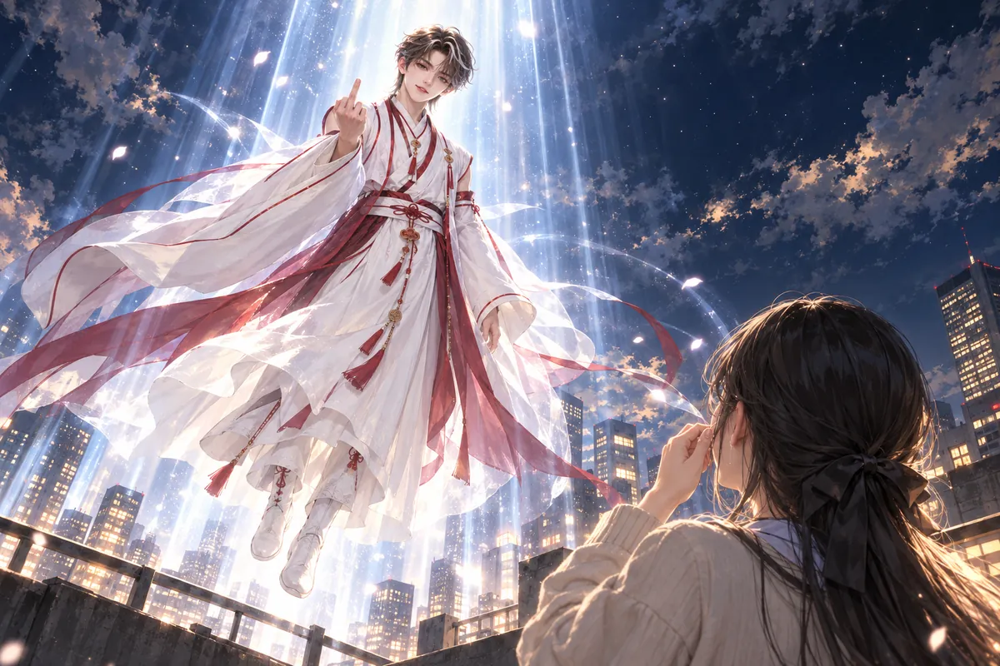

鐵蛋拿網撈蝦，被店家罵這是釣蝦場。
她嘴上回敬，旁邊兩個男人卻已把地圖攤好。
白蛛會想用空殼公司，高價買剩下七成口罩，再賣去炒得更貴的國外。杜先生說，那就賣，疫情將過，正好讓資金回來。
月老把公司那一層看清，沒有隻見買家出高價就當是新來的好生意。白蛛會要怎麼轉出去，後面還有自己的算盤，既然對方肯將這份盤算搬到面前，便也得承擔看錯時機的結果。
杜先生問過，確認原先要照顧的人已有安排，才將剩下的數量交出去。口罩方舟不是為了永遠把資金壓在箱子裡，只要需要的人仍買得到，這一批結束，兄弟便能拿回投入的錢。
鐵蛋的網在旁動，小聲爭辯釣蝦場為什麼不能撈，兩個男人卻沒讓眼前的吵鬧影響地圖。
月老將下一處指給老杜看。白蛛會的生意可以照它願意的做，有些不能放過的違禁品，則需要用另一套真正能讓罪行停下的辦法處理。

天使要月老耗盡靈力，才能帶他穿越濾網返家。老杜則可以先活完此生，再決定是否去天堂。
既然快走，月老要先移開朋友腳邊的絆石。他指出違禁品倉庫，一處處落到地圖上。
地圖上每個位置都有實際的路，不能只圈一片北方，便叫杜先生自己找。月老核過紙鶴帶回的線索，再看老杜能怎樣將情報交出去。
他需要耗盡神力，可這不表示每一道術都能隨意浪費。若最後能替留下的人清掉眼前的威脅，這份耗去才不只是為了自己回家。
杜先生看著，慢慢記。到了庚寅，他不能與神一起離開，得繼續面對筱晴，面對願意跟他做正當生意的兄弟。
天使讓他先活完此生，這些便是此生還沒做完的部分。月老不替他將日子過全，只將查得到的地方交到手裡。兩人低頭對完，暫時都沒有提下一次還能在哪個世界相見。
鐵蛋跑來討姻緣和冰淇淋，覺得神怎麼如此小氣。
月老看她掌紋，說二十五歲前沒戀愛運。
「之後呢？」
「之後妳就習慣了。」
她罵哈密瓜，杜先生笑出聲。
鐵蛋瞪著月老，方才只問戀愛運，偏偏又得到一個讓人想打的後半句。神明很會讓場面輕鬆，也很會讓一個認真等答案的人忘掉自己原先還想客氣。
杜先生笑完，往她手裡的網看，提醒別再被店家罵。鐵蛋不服，話題轉得快，地圖卻已慢慢摺好。
月老看兩人，知道自己離開以後，這些吵鬧還會繼續。舊友沒有消失，能坐在這裡、能戒菸、能想辦法讓兄弟往善的地方走，回去時該將這些都講給認識他的人聽。
他想到狐姬與語彤，沒有先把訊息說成找到了一個完全不用擔心的結局。老杜仍有辛苦，也仍得自己選擇。只是這次有一份確實能帶回去的好：那個他們以為已經失去的人，還在另一個世界認真活著。
＊ ＊ ＊
白老大買完口罩，疫情竟緩，價格暴跌。
其他據點又被警察抄。他催裝貨，懷疑黑龍算計，倉庫門卻先開了。
訊息一通接一通，白老大原本想先把貨賣出去，聽到的卻是另一個地方出事。錢壓著，貨還在，價格已經不肯照他最初想的往上走。
他把這一切往黑龍堂身上接，越想越覺得不是巧合。若當初買得太快，如今承認，便連自己的判斷都要一起算進去；說被算計，則至少還能找到一個可恨的人。
門開啟，光照進來，他先看來的是誰，才發現眼前不只是來吵一架的對手。倉庫的位置與裡面放著的東西，一旦有人交給警方，就不再能靠兩位老大如何談來決定。
扛球棒的人走進來，開口還有那套熟悉的出場氣勢。白老大聽著更怒，卻沒料到對方這次要講的，竟是為什麼該交給法官。
光頭打手扛球棒，進來替自己點一首適合的出場音樂。白老大怒問，為何不單挑，竟然報警。
「我是良好市民。」
對方喊司法不公，他拿公母回嘴，叫有話找法官。
警察感謝黑龍捐口罩，也協助破獲源頭。打手客氣回，改天來泡茶。他手上雖還扛著習慣的球棒，這一場卻靠把罪行交給警方結束。
球棒沒有揮出去，旁邊的人也沒有依照舊習慣往前圍。習慣跟著黑龍堂辦事的小弟，此刻必須學著在該讓開時讓開，讓警察把後面的程序接下去。
這份改變沒有立即讓他們全像普通上班的人。口氣仍會挑釁，站姿也還有江湖的樣子，至少手裡的東西不再是解決這場事唯一能用的辦法。
白老大吼司法，聲音被倉庫裡的迴響拉長。扛球棒的人答完，便沒繼續替自己爭一項誰更有面子的勝負。
警車在外面，口罩捐過、線索交過，眼前的罪行也有地方受理。他招呼改天泡茶，說得自然，像第一次能將與警方說話的場面，放到一件不必擔心被當場抓走的日常裡。
＊ ＊ ＊
路邊，術士與八尺看著敗局，知道再收不到錢。
術士說，那一槍之後，他把八尺救了回來。
八尺這才知道術士有義氣。他說失業了，找個地方玩，問她想去哪。
故鄉，嚇小孩。
八尺說得毫不猶豫。她不想再被拿去抓杜鋒，也不想繼續等一個如今根本付不出錢的角頭，故鄉反而成了能由自己選的地方。
術士聽見，沒有嫌她只想到小孩。他說山，說登山客，把自己的喜歡也擺到旁邊，兩個人從這場失敗的生意裡，竟找到一項都覺得能做的事。
方才那一槍沒將八尺永久留下，術士救她回來，也不完全照他說過的狠樣子。她因此願意聽下一個去處，不必先將對方所有的話都當成只為滅口。
紅傘收起，他們往外走。倉庫還有警方在忙，白蛛會的敗局不會因為這兩個人忽然歡呼便輕一些。至少八尺不再被舉在別人手裡，等一個與自己無關的目標被弄死。
他喜歡山，想用幻術整登山客。她說有，兩個人竟一同歡呼。
八尺收起紅傘，跟著術士走了。白蛛會的倉庫外，只剩警車的燈還在閃。
＊ ＊ ＊
怡曼躺上紋身椅，怕疼。
月老說，刺在靈魂，不會痛。雙手同時落下，替她與安恆完成三層文印。杜先生在旁看得驚歎，想到此地筱晴還沒有足夠愛自己，便把羨慕收成一句玩笑。
鐵蛋也得到配對。北部鳳息宮，單身、帥的乩童，已是兩位月老盡力找到的緣。
她嫌遠，仍把名字聽得很仔細。
鐵蛋嘴上說北部，臉卻沒真的轉開。月老剛講過孤獨終老，如今願意給她一個具體的宮與具體的人，哪怕路遠，也不能隨便聽過便忘。
她問對方是不是確實單身，兩個神看著她，答得比先前的玩笑認真。緣不是一張能保證交往成功的票，至少起頭需要確認的條件，已經替她找過。
杜先生在旁笑，沒再拿神的真實年紀挖苦。鐵蛋把名稱記住，手上那枚暈船雷達也還在，終於有一件能由自己後來慢慢去試的事。
月老看她收好，心裡少一項掛著的約定。沒有誰能替一個人過完姻緣，他能給的到這裡，往後的相處，還得她自己聽、自己看。
神力耗盡，月老要走了。他把存摺交給安恆。對打機賣的兩百萬，投資口罩後，如今變成八位數。
安恆看傻了。原以為神只勸善，竟真的把生存的困境也放進手裡處理。
存摺很薄，數字卻讓他看了好幾次。兩百萬原本就已是家裡難以想像的金額，如今變成八位數，更不是拿到以後便能只說一聲好而自然放進口袋的東西。
安恆先看月老，像擔心聽錯歸誰，再看怡曼。女孩也驚訝，沒有因為今天是離別便裝成早知道一切。
神明講善良，少年本來以為是希望他不要再做傻事，回去繼續唸書；這一筆卻讓他真正有餘地，不必在每次考壞時都把媽媽將受的苦算到絕望。
月老沒有要求他從此不可以失敗。錢讓人能安心，怎麼花、怎麼照顧自己與母親，仍得慢慢學。安恆握著，第一次知道活下去不是只能靠忍，也可能有人認真替自己搬開眼前最重的一塊。
月老相信，善良的人有了安身的餘地，可以把幸福再分給別人。
少年哭著道謝。怡曼說，明明如此白目，離別為何還這麼難過。
光開始升起。
月老的身影變了，方才還能拿來回嘴的距離很快不再那麼實在。怡曼看著，原先想說的謝謝太多，最後反而只剩一聲回去要幸福。
他給她與安恆文印，給他們一條能繼續走的日子，現在也該回到自己的牽掛前面。女孩知道那裡的名字，卻還沒見過那個人，仍真心希望他們能在一起。
安恆沒有鬆開存摺，也沒有只看手裡的數字。他抬頭將神明看清，記住那個一開始花掉七百元、後來又陪自己回家的白目模樣。
光束將月老托起。他已換回白底紅邊的神服，寬大的袖子向下垂著，紅色繫帶隨上升的氣流飄開。鐵蛋站在底下，仰頭看他，眼淚怎麼擦也擦不完。
「你回去要幸福喔。」她的聲音帶著鼻音。
月老低頭看著她，先抬手揮了揮。鐵蛋正要跟著揮手，就看見他把其他指頭收起，只留下中指。
她的手停在半空。
「……白目。」
那張臉還是一副若無其事的樣子，嘴角卻藏不住笑。都已經被光帶上天了，他竟然還有空鬧她。鐵蛋吸了一下鼻子，想罵，卻先笑了出來，眼淚也跟著掉。
「這種時候還比這個！」
她說完，那片白色衣角便淡進光裡。月老連最後的告別都沒肯乖乖照別人的意思來，留下她又哭又氣地望著天空。光束散去，屋頂忽然安靜了。她慢慢放下手，剛才那個欠罵的笑容卻還留在眼前。

這份得到的善意既已到手，接下來便要由安恆自己，慢慢活成願意把幸福再分出去的人。
安恆握著存摺，與她站在一起。那份曾只敢放在神明身上的相信，終於能慢慢留給自己。
＊ ＊ ＊
丙午時空，東京的地下靈界夜店裡，燈球緩緩轉動。
月老在庚寅經歷的一切，還沒有傳到這裡。對三途川的人而言，他已經失蹤六個月了。
華佗在後臺聽節拍，平日很熟的開場到了今晚，仍得先在心裡走一遍。燈下有人等著快樂，他卻帶著另一份想回去找人的急。
六個月是三途川的時間，是每次問有沒有訊息都還得等待的日子。他沒有接到月老在庚寅怎樣鬧人的傳話，也不能只憑朋友一向厲害，便當失蹤是出去玩得忘了回。
衣服整理好，華佗往臺口走。觀眾能看見的是今晚來演出的醫神，不該被他要找人的心緒弄成一場必須共同承擔的憂慮。
可在舞開始以前，他仍想先說一聲。人在哪裡，他不知道；將巡演結束後的方向講清，至少讓自己不再只是把那份牽掛放到明天又一天的忙碌後面。
華佗站到臺前，先向觀眾道晚安。
他的好友月下老人，失蹤六個月了。巡演結束，他要回三途川去找。說到這裡，臺下安靜一點，又有人喊加油。
華佗點頭，沒有把整場演出變成自己的難過。
臺下有人回應，他聽見，向那個方向稍稍停目光。加油兩字很簡單，不能立刻找到月老，卻讓這一段說出口的牽掛沒有落到無人理會的地方。
接著他把聲音帶回今晚。音樂還沒起，觀眾的手已有人抬起，等他一句口令。
忘憂舞原本就是讓不快樂的人也有機會動起來，不需要每個來的人都先把悲傷交代完整。華佗自己也有擔心，仍能把眼前這段節拍做好的時候，便不必讓等待成為唯一可做的事。
燈球慢慢轉，光落到人臉上，留下又走。有人跟不上，他放慢一點示意，讓笑聲有地方出來。今晚的快樂是真的，演出以後要回去，也是真的，兩件事不必互相取消。
今晚先好好享受忘憂舞。
節拍落下，他讓大家出聲，舞臺與臺下的手一齊抬起。衣襬在燈下轉開，有人踩錯，有人笑，有人終於鬆動一直繃著的肩。
從狐姬的夢，到安恆與怡曼的練習，這支舞已替許多靈魂陪過難熬的時刻。如今，發明它的人親自站在燈下，仍願把快樂送出去。
演出之後，還要回去。
巡演的行程有最後一站，找人的事卻沒有能夠照著唸的終點。華佗知道，回到三途川也未必馬上得到答案，仍得先回去看看留下的人現在如何。
語彤接著做文印，陰曼在找線索，阿志還開店。朋友失蹤以後，那些日常並沒有全部停掉，只是每個人做著原本會做的事時，又多扛了一份還不能放下的等。
他在臺上把最後的動作帶完，掌聲響起來時沒有直接走。該謝的幕，還是謝，讓眼前這些來的人能將一場完整的忘憂舞帶回去。
等燈收了，行李便要往另一個方向拿。這一次不只是繼續去下一座舞臺，把快樂送出以後，他也要去找那個總能在差事之間偷空說一句欠揍話的好友。
他望著觀眾，眼裡帶著未說盡的牽掛。三途川的朋友仍在等，失蹤的人還沒有被真正找回。
最後一段音樂升高。華佗帶大家完成動作，向臺下鞠躬。等掌聲停了，他還得收行李，趕回三途川。